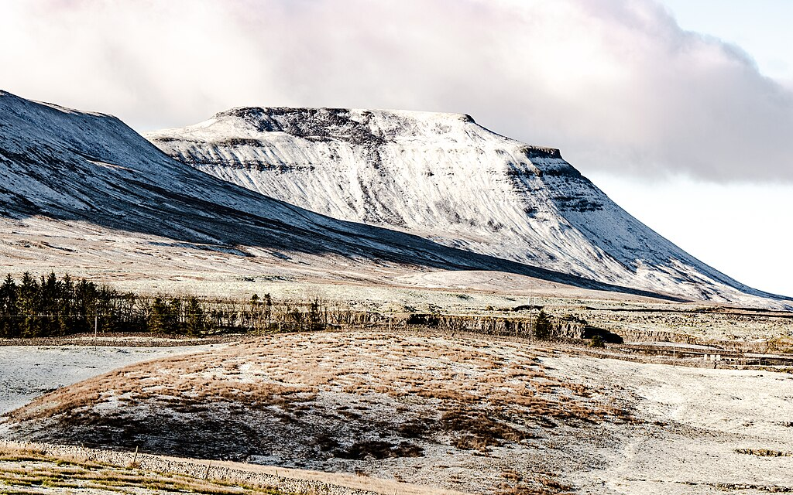

As part of the NBFAS meeting at Lancaster University, April 2024, a morning of talks will be held dedicated to the memory of H. Garth Dales.
Garth was a Professor of Mathematics at Lancaster from 2011 until his retirement in 2021. In early 2022 he was diagnosed with motor neurone disease, and passed away on 8th October 2022. He is much missed by colleagues and friends. Garth was a great supporter of NBFAS, and in his honour, a small meeting will be held on the Thursday morning, with research talks from past students of Garth.
I will give a quick introduction to Frobenius Algebras, from a down-to-earth algebraic perspective, and with an explicitly Banach Algebraic viewpoint. I will then discuss some ideas about how to define a Banach Algebraic Frobenius Algebra, concentrating upon how naive ideas don't seem to work. Time allowing, some discussion of Frobenius Extensions will be made.
For those who knew Garth, beyond Mathematics, it was clear that hill-walking was a great pleasure. While Garth worked at Lancaster, he lived in Bentham, on the edge of the Yorkshire Dales National Park. On Friday afternoon, an excursion is planned to Ingleton from which we will walk up Ingleborough, about 5 miles round-trip and 1850ft of ascent.
Lancaster hosted a retirement meeting in honour of Garth in August 2021.
Obituaries can be found from the University of Leeds and Lancaster University. An obituary was published by the LMS in the March 2023 edition of the Newsletter.
The Oberwolfach Photo Collection contains some photos of Garth throughout his life.
Thursday 4th April 2024
School of Mathematics and Statistics
Lancaster University
{kind=link}